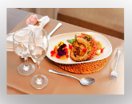

Eu sempre fui fascinado pela arte de cozinhar. Acho que ser um cozinheiro é mais do que apenas
preparar refeições, é criar experiências e memórias para as pessoas. Gostaria de ser um cozinheiro
porque adoro a liberdade de criar e experimentar novas receitas, combinando sabores e texturas de
maneira única. Além disso, a cozinha é um ambiente dinâmico e criativo, onde posso expressar minha
personalidade e estilo.
Outra razão pela qual gostaria de ser um cozinheiro é a satisfação de ver as pessoas desfrutarem da
comida que preparei. Não há nada mais gratificante do que ver alguém saborear um prato que fiz com
carinho e dedicação. Além disso, a cozinha é um lugar onde posso trabalhar em equipe, colaborando
com outros cozinheiros e profissionais para criar uma experiência gastronômica incrível.
A cozinha também é um campo em constante evolução, com novas tendências e técnicas surgindo o tempo
todo. Gostaria de estar por dentro dessas novidades e incorporar elas em meu trabalho, sempre
buscando melhorar e inovar. Além disso, a cozinha é uma forma de arte que pode ser compartilhada
com as pessoas, criando uma conexão entre culturas e tradições.
Por fim, ser um cozinheiro é uma profissão que me permitiria combinar minha paixão pela comida e
pela criatividade em um trabalho gratificante e desafiador. Estou ansioso para aprender e crescer
nessa área, experimentando novas receitas e técnicas, e compartilhando minha paixão pela comida com
os outros. É uma carreira que me permitiria fazer o que amo todos os dias, e isso é algo
incrivelmente motivador.
